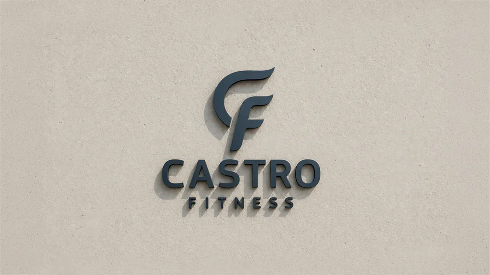
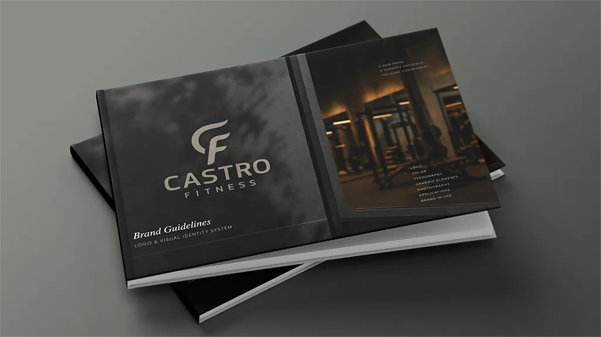
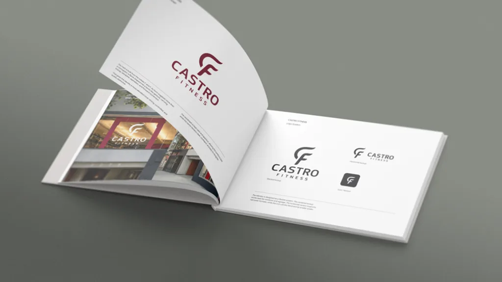

Castro Fitness
A new name needs more than a sign, it needs a sharper sense of presence.
I came across the upcoming name change from Alex Fitness to Castro Fitness and decided to approach it from the outside, as a design problem rather than a request.
The existing identity felt accidental. Not necessarily wrong, but without a clear center. It didn’t reflect the place, the neighborhood, or the kind of presence a local gym can have when it’s more than just equipment and memberships.
Castro is a specific part of the city. It has character, density, history, and a certain level of expectation. The identity needed to feel grounded in that context, not generic.
The mark is built from the initials C and F. Its form moves away from a literal monogram and leans into a gesture. Something closer to a controlled motion, or a directional force. There is a hint of a flame, or a torch, but not in a decorative way. More as a sense of energy held in structure.
That balance was important. Too expressive, and it becomes loud. Too neutral, and it disappears.
The wordmark is kept calm and open, allowing the symbol to carry most of the tension. Together, they form a system that can adapt across different scales and surfaces without losing clarity.
The color palette follows the same logic. Neutrals create a stable base. Suō introduces identity and weight. A restrained yellow works as an accent, connecting back to the physical environment of training without turning into a visual cliché.
Part of the work was also about imagining how the identity would exist in the real setting. Not just on paper, but in the window, in the street, in passing. The second floor glass becomes a natural stage. The mark doesn’t need to shout. It holds its place and becomes visible over time.
This was a proactive proposal. An attempt to show how a name change can become something more structural. Not just a replacement, but a shift in how the place presents itself and is perceived.



